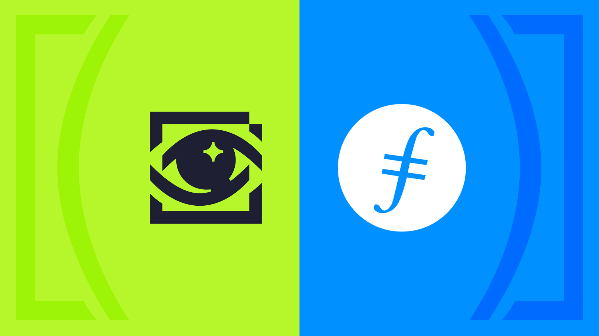

Questbook doesn’t compromise on decentralization of the software stack. Questbook works with the best teams to push the boundaries of decentralized applications. As of today, we’re proud to announce integration with Protocol Labs & Filecoin.

We’ve previously talked a lot about the SACI Architecture for software applications. Storage is one of the most important parts of the tech-stack.
We don’t run our own centralized database or servers. All the data that on the grants & bounties tool - including creating grants, developers applying, reviewers reviewing - are all data that is stored on chain or on decentralized storage.
We initially started with IPFS as our data store. As our product aged, we realized we were losing a lot of our data. We were able to pin it on the servers that we spun up, but they weren’t getting pinned on other servers. So either the data was unavailable or the data access became incredibly slow - rendering the product almost unusable.
That is when we realized, thanks to the amazing team at Protocol Labs, that a more efficient way to store and retrieve such data is using Filecoin to make data available all the time.
We have migrated to Filecoin using Web3.storage and our product feels much snappier and easier to use! Excited to see massive strides in infrastructure improvements in Web3!